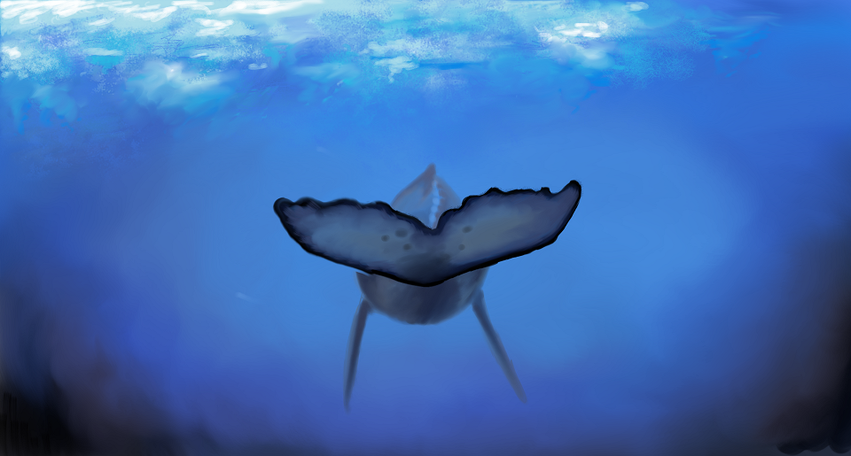
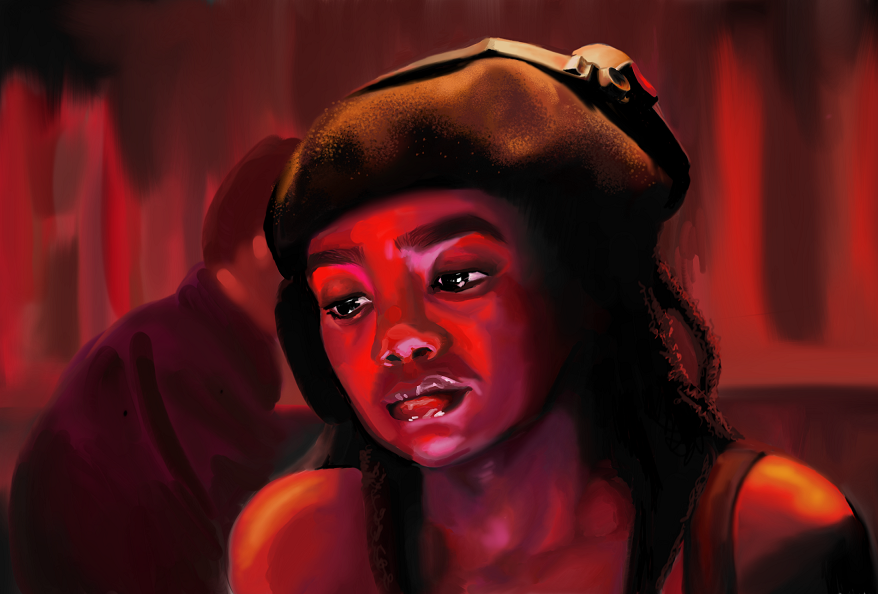
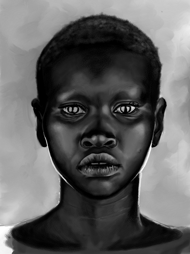
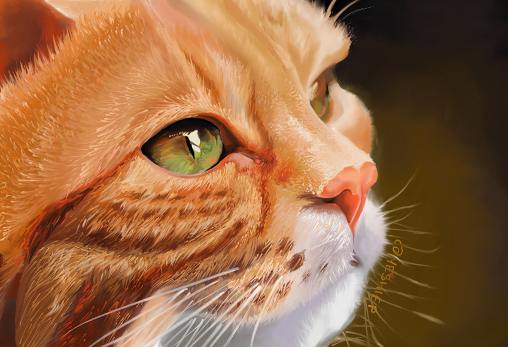

I call this one Whale Tail, but I've always been terrible at naming my art.

The Red Girl-a portrait of a DJ I found on Instagram

Beautiful, another Instagram portrait which was so stunning I decided to try to recreate it in a painting.

Sassy, for all the cat lovers out there.

Thanks for scrolling!
Back to the Home Page⏐Or Check Out My Hobbies⏐Let's Connect!